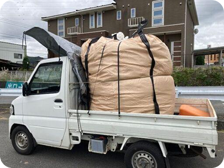
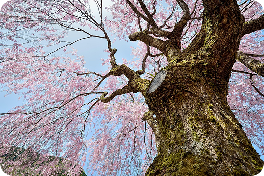

Curious? Want to Learn More?
“Kei trucks were first introduced in Japan in 1959 and have since been widely used throughout Asia.”
-- Wikipedia

“Despite their tiny size, Kei trucks can carry approximately 770 pounds”
“In 1912, Japan gifted cherry trees to Washington D.C., as a symbol of friendship between the two countries”
-- Facts Net
“Their blooming season is short, lasting 1-2 weeks”
-- Facts Net

“Some cherry trees are over 1,000 years old!”
-- Facts Net